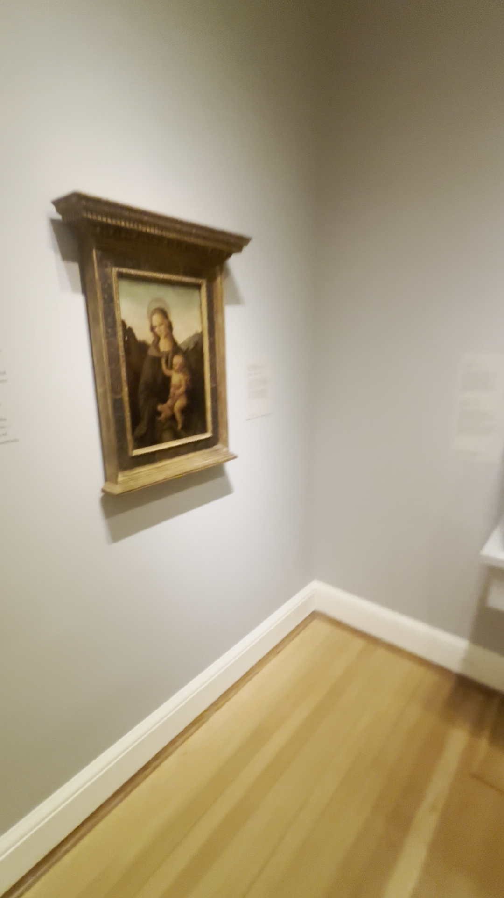
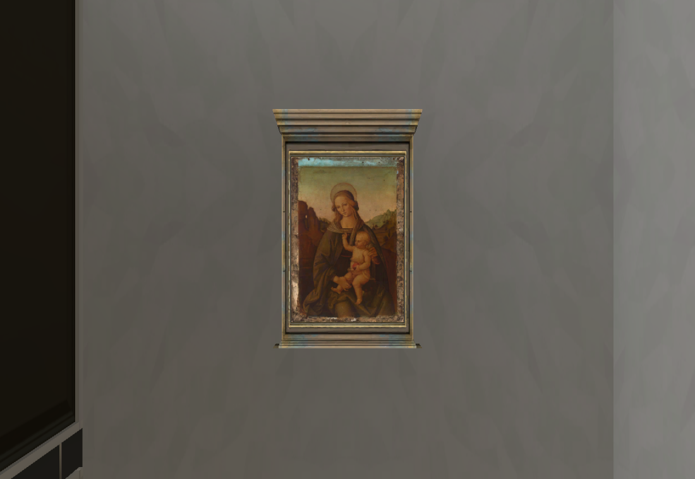
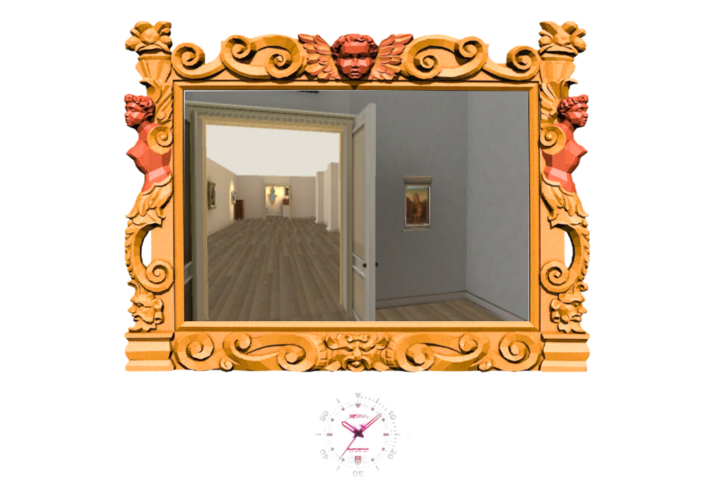
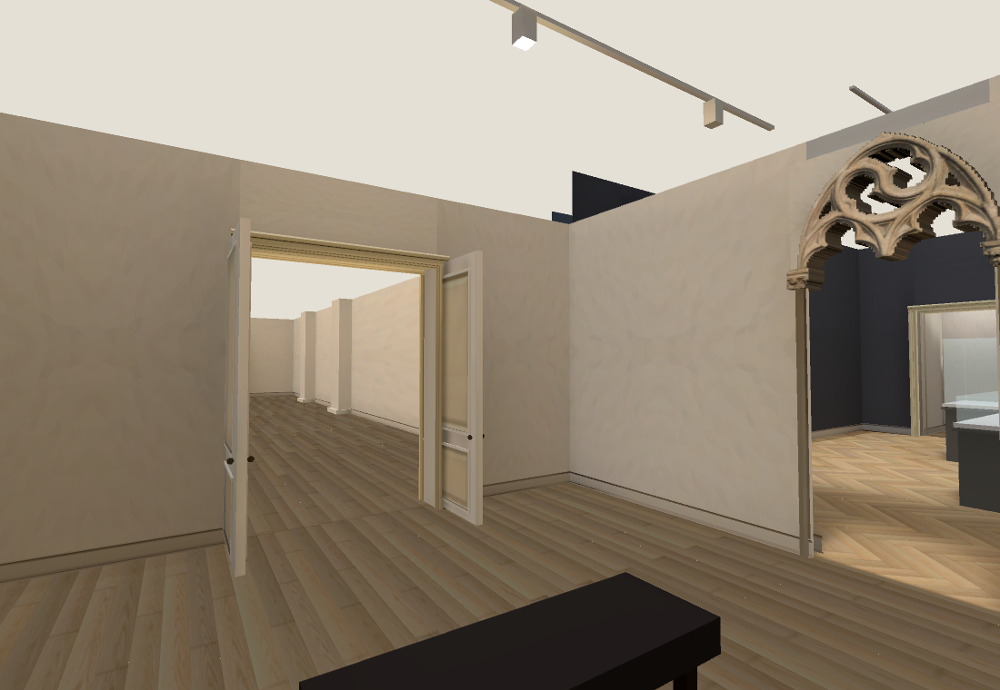
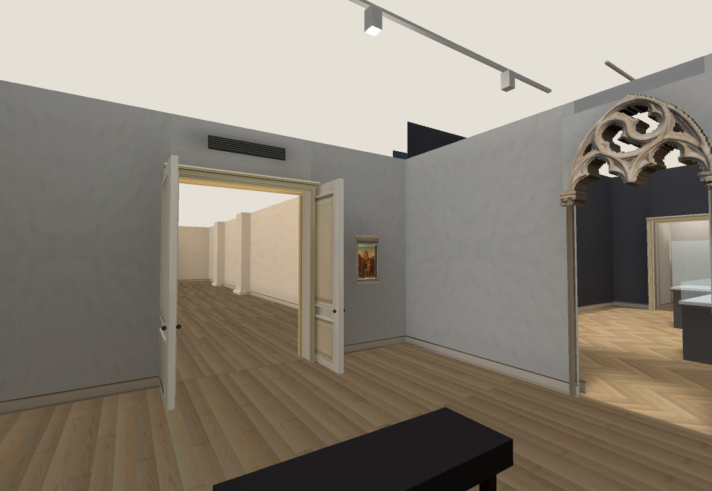
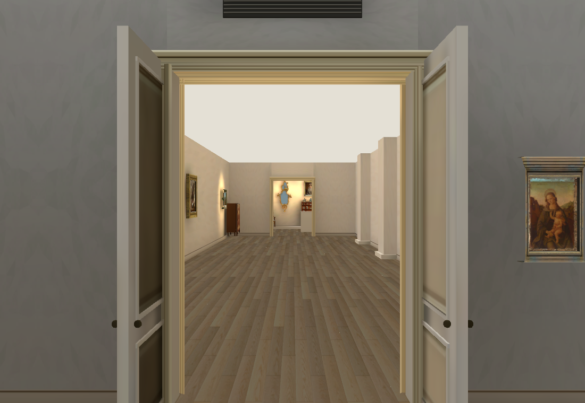
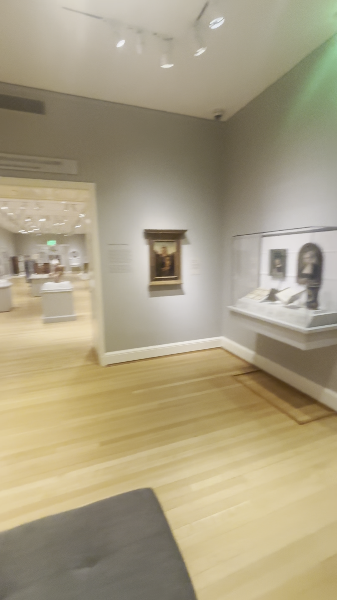
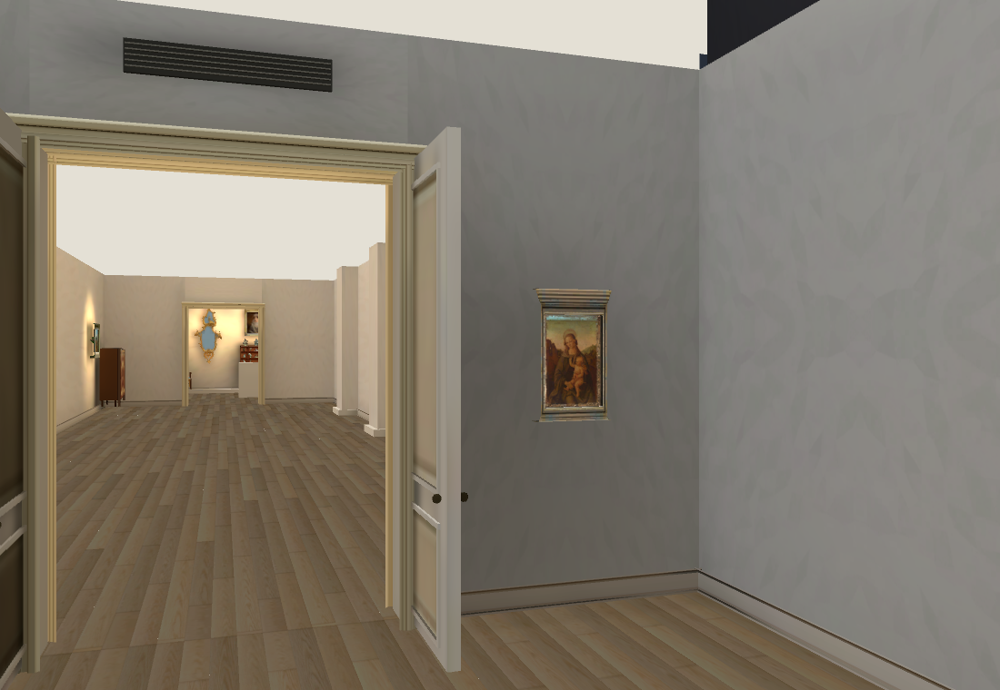
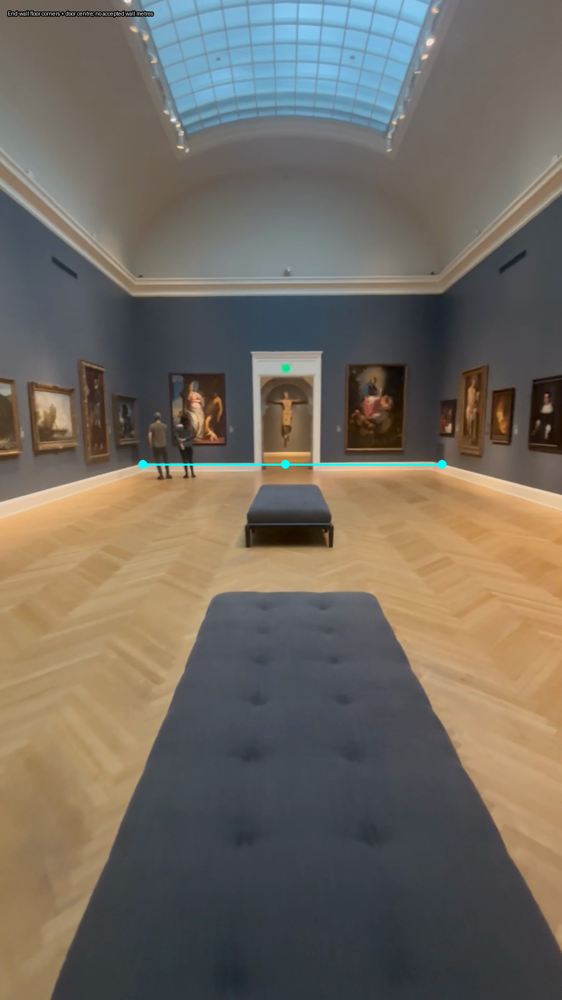

Collection · Renaissance source comparison
Walk the latest rooms · Previous grey-room pass
Use 2 for the European gallery and walk to its far end. The Renaissance room now has Perugino beside the door, a ventilation grille and light grey walls. Full reconstruction and the Grand Gallery connection are unfinished.

Native IMG_6383 35.75s: Perugino panel and architectural frame.
RISD API1546096 /16.236, original museum panel, one new Muse architectural frame. Brown derivative replaces the generated blue recesses. Visible support cropping, exact bands/depth and palette remain provisional.
Walking eye-height, actual376x252 Main Hall presentation; native painting and frame retain the shared shaders/bake.
Before: warm ivory walls, no Perugino or north-door grille.
Current: neutral light grey and source-relative painting/grille. Exact room dimensions and missing case contents are unfinished. Native north doorway: triptych left, Perugino right. The triptych and display contents still need assets.
Native north doorway: triptych left, Perugino right. The triptych and display contents still need assets.
Current north door: two unequal panels and correct swing retained; doorway dimensions unchanged. Small-panel scale estimates disagree between the wide views, so no metric claim is made.
Native reverse wide: doorway, Perugino and east-wall case/corner.
Current corner comparison. East-wall cases and their objects remain missing; offsets are provisional.
Original Main Hall wide: end-door centre lies close to the wall midpoint. Offset end doors cannot be used to repair the current loop. Museum schematic: European gallery runs parallel to Grand Gallery. Diagram dated2020; topology aid only, no scale or current hang acceptance.
Museum schematic: European gallery runs parallel to Grand Gallery. Diagram dated2020; topology aid only, no scale or current hang acceptance.RISD floor-five guide/map · Perugino catalogue · Manual wide study and rejected metric estimates
Native RTX and RTX Chrome66/66 collision/camera checks; actual browser keyboard round trip passes. Native p9529.63ms; browser p9528.79ms.603 authored surfaces baked. Repeated-bake guard prevents including the previous lightmap meshes twice. Owning Shell failures are recorded in the checkpoint;60fps performance target is unmet.
One OpenRouter meta/muse-image output$0.01; cumulative$0.72 actual/$0.73 conservative. Heartbeat disabled. Next: fit the parallel European/Hall extents and end rooms together against the wide videos, then continue missing objects. Existing4.60m lateral/17.05m axial Hall-entry discrepancy is unresolved.